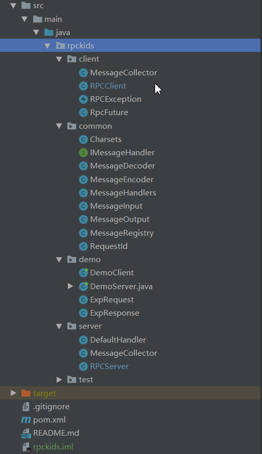

前言
什么是RPC
全名 Remote Procedure Call 即远程过程调用,具体的我就不解释了,自行Google
为什么使用Netty
本次实现的RPC是基于socket通信的,在Java中如果使用原生的socket通信,真的是要命,如果使用BIO的模式,虽然简单,但是性能实在不行,如果使用NIO,繁琐的操作可能会使我自闭,既然有了Netty,还何必折磨自己,原理懂就行了。至于Netty有什么好处，我就随便贴一下：
- 使用简单：API 使用简单，开发门槛低。
- 功能强大：预置了多种编解码功能，支持多种主流协议。
- 定制能力强：可以通过 ChannelHandler 对通信框架进行灵活的扩展。
- 性能高：通过与其它业界主流的 NIO 框架对比，Netty 的综合性能最优。
- 成熟稳定：Netty 修复了已经发现的所有 JDK NIO BUG，业务开发人员不需要再为 NIO 的 BUG 而烦恼。
- 社区活跃：版本迭代周期短，发现的BUG可以被及时修复，同时，更多的新功能会被加入。
- 案例丰富：经历了大规模的商业应用考验，质量已经得到验证。在互联网、大数据、网络游戏、企业应用、电信软件等众多行业得到成功商用，证明了它可以完全满足不同行业的商业应用。
整体思路
- 创建RPC的服务提供者,使用正常的Netty服务端即可,有两个重点,一个是channelPipelne,需要绑定自定义的编解码器和消息处理类,二是创建两个自定义的包含Map的类,内部Map的键都是标识要调用的接口的字符串,值分别是接口的输入类型和处理器对象.具体的我们后面再说。
- 创建RPC的服务消费者,也是正常的Netty客户端,重点在于我们在这个客户端中提供一个send方法,然后将连接服务端和其他细节都隐藏起来,当客户端和服务端建立连接后,就可以使用这个send方法发送远程调用请求,客户端同样有一个Map来保存我们要调用的远程接口实现和返回类型,具体下面再说
- 整体的顺序是 RPCClient调用send()方法,发送请求,服务端收到请求,进入channelHandler实现类中处理请求,然后将返回封装返回,客户端收到响应,进入自己的ChannelHandler中处理响应.
show code
看一下目录结构:

服务提供者
我们从服务端最上层开始看起,就是DemoServer.java.
class FibRequestHandler implements IMessageHandler {
private List fibs = new ArrayList<>();
{
fibs.add(1L); // fib(0) = 1
fibs.add(1L); // fib(1) = 1
}
@Override
public void handle(ChannelHandlerContext ctx, String requestId, Integer n) {
for (int i = fibs.size(); i < n + 1; i++) {
long value = fibs.get(i - 2) + fibs.get(i - 1);
fibs.add(value);
}
ctx.writeAndFlush(new MessageOutput(requestId, "fib_res", fibs.get(n)));
}
}
class ExpRequestHandler implements IMessageHandler {
@Override
public void handle(ChannelHandlerContext ctx, String requestId, ExpRequest message) {
int base = message.getBase();
int exp = message.getExp();
long start = System.nanoTime();
long res = 1;
for (int i = 0; i < exp; i++) {
res *= base;
}
long cost = System.nanoTime() - start;
ctx.writeAndFlush(new MessageOutput(requestId, "exp_res", new ExpResponse(res, cost)));
}
}
public class DemoServer {
public static void main(String[] args) {
RPCServer server = new RPCServer("localhost", 8888, 2, 16);
server.service("fib", Integer.class, new FibRequestHandler()).service("exp", ExpRequest.class,new ExpRequestHandler());
server.start();
}
}
主方法看起,首先创建RPCServer对象,RPCServer server = new RPCServer("localhost", 8888, 2, 16);
参数分别是host,port,ioThread,workerThread,前两个容易理解,ioThread是线程数,也就是我们创建Netty服务端时创建的workerGroup(NioEventLoopGroup)的大小,表明处理连接进来的请求的并发数,然后workerThreads是我们的处理器内部的线程池的最大线程数.
然后将处理器对象和参数类型注册入提供者,使用的就是service()这个方法,可以看一下这个方法.
//RPCServer.java
public RPCServer service(String type, Class reqClass, IMessageHandler handler) {
registry.register(type, reqClass);
handlers.register(type, handler);
return this;
}其实就是将参数类型和处理器对象注册进入,registry就是保存参数类型的类,handlers是保存处理器对象的类,键都是标识处理器类的字符串,可以看上面使用service()方法的地方
server.service("fib", Integer.class, new FibRequestHandler()).service("exp", ExpRequest.class,new ExpRequestHandler());fib就是标识符,Integer.class表明这个handler的参数是Integer,new FibRequestHandler()是处理器对象,具体的实现也在上面,就是一个斐波那契数列的求法(当然这不是一个好的解法),后面的也相同.
最后就是启动服务server.start();
然后看一下RPCServer.java:
public class RPCServer {
private final static Logger LOG = LoggerFactory.getLogger(RPCServer.class);
private String ip;
private int port;
private int ioThreads;
private int workerThreads;
private MessageHandlers handlers = new MessageHandlers();
private MessageRegistry registry = new MessageRegistry();
{
handlers.defaultHandler(new DefaultHandler());
}
public RPCServer(String ip, int port, int ioThreads, int workerThreads) {
this.ip = ip;
this.port = port;
this.ioThreads = ioThreads;
this.workerThreads = workerThreads;
}
private ServerBootstrap bootstrap;
private EventLoopGroup bossGroup;
private EventLoopGroup workerGroup;
private MessageCollector collector;
private Channel serverChannel;
public RPCServer service(String type, Class reqClass, IMessageHandler handler) {
registry.register(type, reqClass);
handlers.register(type, handler);
return this;
}
public void start() {
bootstrap = new ServerBootstrap();
bossGroup = new NioEventLoopGroup(1);
workerGroup = new NioEventLoopGroup(ioThreads);
bootstrap.group(bossGroup,workerGroup);
collector = new MessageCollector(handlers, registry, workerThreads);
MessageEncoder encoder = new MessageEncoder();
bootstrap.channel(NioServerSocketChannel.class).childHandler(new ChannelInitializer() {
@Override
public void initChannel(SocketChannel ch) throws Exception {
ChannelPipeline pipe = ch.pipeline();
pipe.addLast(new ReadTimeoutHandler(60));
pipe.addLast(new MessageDecoder());
pipe.addLast(encoder);
pipe.addLast(collector);
}
});
bootstrap.option(ChannelOption.SO_BACKLOG, 100).option(ChannelOption.SO_REUSEADDR, true)
.option(ChannelOption.TCP_NODELAY, true).childOption(ChannelOption.SO_KEEPALIVE, true);
serverChannel = bootstrap.bind(this.ip, this.port).channel();
LOG.warn("server started @ {}:{}\n", ip, port);
}
public void stop() {
// 先关闭服务端套件字
serverChannel.close();
// 再斩断消息来源，停止io线程池
bossGroup.shutdownGracefully();
workerGroup.shutdownGracefully();
// 最后停止业务线程
collector.closeGracefully();
}
} 重点是start()方法,是比较经典的Netty服务端启动,其中MessageCollector collector就是我们的处理器,然后看channelPipeline绑定的handlers,ReadTimeoutHandler是一个超时关闭的处理器,MessageDecoder(),encoder是编解码器,最后绑定我们的collector处理器对象.
接着我们从一条请求进来开始分析,首先一条请求进来是以channel的形式,然后绑定NioEventLoopGroup中的一个EventLoop.然后再进下面的链式请求,因为是进来的请求,所以不会经过编码器,只会通过解码器,将Bytebuf转换成我们需要的对象,那么久看一下这个编码器MessageDecoder:
public class MessageDecoder extends ReplayingDecoder {
@Override
protected void decode(ChannelHandlerContext ctx, ByteBuf in, List< Object > out) throws Exception {
String requestId = readStr(in);
String type = readStr(in);
String content = readStr(in);
out.add(new MessageInput(type, requestId, content));
}
private String readStr(ByteBuf in) {
int len = in.readInt();
if (len < 0 || len > (1 << 20)) {
throw new DecoderException("string too long len=" + len);
}
byte[] bytes = new byte[len];
in.readBytes(bytes);
return new String(bytes, Charsets.UTF8);
}
}
可以看到我们从ByteBuf中读取到到requestId,type和content构建了MessageInput对象,然后这个对象会跟随在ChannelHandlersContext中,然后我们看一下这个MessageInput,
public class MessageInput {
private String type;
private String requestId;
private String payload;
public MessageInput(String type, String requestId, String payload) {
this.type = type;
this.requestId = requestId;
this.payload = payload;
}
public String getType() {
return type;
}
public String getRequestId() {
return requestId;
}
public T getPayload(Class clazz) {
if (payload == null) {
return null;
}
return JSON.parseObject(payload, clazz);
}
} 重点是getPayload()方法,就是将我们的传入的字符串转化成对应类型的对象,使用的是fastJson的方法,其实这就是一个反序列化的过程,通过Json的方式.
似乎绕的有点远,我们回到编解码器后,就是channel进入到MessageCollector,直接上代码吧 :
@Sharable
public class MessageCollector extends ChannelInboundHandlerAdapter {
private final static Logger LOG = LoggerFactory.getLogger(MessageCollector.class);
private ThreadPoolExecutor executor;
private MessageHandlers handlers;
private MessageRegistry registry;
public MessageCollector(MessageHandlers handlers, MessageRegistry registry, int workerThreads) {
BlockingQueue queue = new ArrayBlockingQueue<>(1000);
ThreadFactory factory = new ThreadFactory() {
AtomicInteger seq = new AtomicInteger();
@Override
public Thread newThread(Runnable r) {
Thread t = new Thread(r);
t.setName("rpc-" + seq.getAndIncrement());
return t;
}
};
this.executor = new ThreadPoolExecutor(1, workerThreads, 30, TimeUnit.SECONDS, queue, factory,
new CallerRunsPolicy());
this.handlers = handlers;
this.registry = registry;
}
public void closeGracefully() {
this.executor.shutdown();
try {
this.executor.awaitTermination(10, TimeUnit.SECONDS);
} catch (InterruptedException e) {
}
this.executor.shutdownNow();
}
@Override
public void channelActive(ChannelHandlerContext ctx) throws Exception {
LOG.debug("connection comes");
}
@Override
public void channelInactive(ChannelHandlerContext ctx) throws Exception {
LOG.debug("connection leaves");
}
@Override
public void channelRead(ChannelHandlerContext ctx, Object msg) throws Exception {
if (msg instanceof MessageInput) {
this.executor.execute(() -> {
this.handleMessage(ctx, (MessageInput) msg);
});
}
}
private void handleMessage(ChannelHandlerContext ctx, MessageInput input) {
// 业务逻辑在这里
Class clazz = registry.get(input.getType());
if (clazz == null) {
handlers.defaultHandler().handle(ctx, input.getRequestId(), input);
return;
}
Object o = input.getPayload(clazz);
@SuppressWarnings("unchecked")
IMessageHandler< Object > handler = (IMessageHandler< Object >) handlers.get(input.getType());
if (handler != null) {
handler.handle(ctx, input.getRequestId(), o);
} else {
handlers.defaultHandler().handle(ctx, input.getRequestId(), input);
}
}
@Override
public void exceptionCaught(ChannelHandlerContext ctx, Throwable cause) throws Exception {
LOG.warn("connection error", cause);
}
} 想深入了解的最好先学习一下Netty的各个组件,尤其是ChannelHandler这个接口,这里我们就不仔细介绍了,看构造器,就是创建一个线程池,自定义线程池线程工厂,阻塞队列和拒绝策略,同时将上一层的两个Map类注入.
入口就是channelRead()这个方法时当有消息到时触发的,也就是Netty事件驱动的体现.我们可以看到,方法内,先判断msg的类型,然后用线程池执行处理这个消息.就是使用handleMessage()方法,看方法内部:
首先拿到输入中保存的标识符,从registry中拿到保存的输入类型,如果没有这个输入类型为null,代表着是非法输入,这里采用的方法是使用默认处理器处理,默认处理器的方法如下:
@Override
public void handle(ChannelHandlerContext ctx, String requesetId, MessageInput input) {
LOG.error("unrecognized message type {} comes", input.getType());
ctx.close();
}也就是直接报错,之所以扩展为一个处理器,而不是直接在handleMessage中直接写,体会一下用意.
然后我们从messageInput中拿到入参值,然后从handlers中拿到处理器对象,如果处理器非null,就使用处理器的handle方法处理输入的值,否则还是调用默认处理器.
然后我们看一下具体的处理器,也就是我们之前的FibRequestHandler:
class FibRequestHandler implements IMessageHandler {
private List fibs = new ArrayList<>();
{
fibs.add(1L); // fib(0) = 1
fibs.add(1L); // fib(1) = 1
}
@Override
public void handle(ChannelHandlerContext ctx, String requestId, Integer n) {
for (int i = fibs.size(); i < n + 1; i++) {
long value = fibs.get(i - 2) + fibs.get(i - 1);
fibs.add(value);
}
ctx.writeAndFlush(new MessageOutput(requestId, "fib_res", fibs.get(n)));
}
} 一个简单的斐波那契求法,重点是最后一句,我们用ctx.writeAndFlush()将处理完的消息传回给client,MessageOutput和MessageInput一样,都是对数据的一个封装类.
这个时候我们需要看一个编码器,MessageEncoder.java:
@Sharable
public class MessageEncoder extends MessageToMessageEncoder {
@Override
protected void encode(ChannelHandlerContext ctx, MessageOutput msg, List< Object > out) throws Exception {
ByteBuf buf = PooledByteBufAllocator.DEFAULT.directBuffer();
writeStr(buf, msg.getRequestId());
writeStr(buf, msg.getType());
writeStr(buf, JSON.toJSONString(msg.getPayload()));
out.add(buf);
}
private void writeStr(ByteBuf buf, String s) {
buf.writeInt(s.length());
buf.writeBytes(s.getBytes(Charsets.UTF8));
}
}
可以看到,首先创建一块池化的堆外内存,然后取出MessageOutput中的数据,然后写入ByteBuf中,加入到ctx流中.
服务提供者的部分大致就是这样了,接下来就是服务消费者的部分
服务消费者
还是从顶层看起: DemoClient.java :
public class DemoClient {
private RPCClient client;
public DemoClient(RPCClient client) {
this.client = client;
this.client.rpc("fib_res", Long.class).rpc("exp_res", ExpResponse.class);
}
public long fib(int n) {
return (Long) client.send("fib", n);
}
public ExpResponse exp(int base, int exp) {
return (ExpResponse) client.send("exp", new ExpRequest(base, exp));
}
public static void main(String[] args) throws InterruptedException {
RPCClient client = new RPCClient("localhost", 8888);
DemoClient demo = new DemoClient(client);
for (int i = 0; i < 30; i++) {
try {
System.out.printf("fib(%d) = %d\n", i, demo.fib(i));
Thread.sleep(100);
} catch (RPCException e) {
i--; // retry
}
}
for (int i = 0; i < 30; i++) {
try {
ExpResponse res = demo.exp(2, i);
Thread.sleep(100);
System.out.printf("exp2(%d) = %d cost=%dns\n", i, res.getValue(), res.getCostInNanos());
} catch (RPCException e) {
i--; // retry
}
}
client.close();
}
}看主方法,首先创建RPCClient,然后创建DemoClient对象,然后使用fib()方法,可以看到fib方法,调用client.send()方法,这个方法在RPCClient.java中,我们去看一下:
public class RPCClient {
private final static Logger LOG = LoggerFactory.getLogger(RPCClient.class);
private String ip;
private int port;
private Bootstrap bootstrap;
private EventLoopGroup group;
private MessageCollector collector;
private boolean started;
private boolean stopped;
private MessageRegistry registry = new MessageRegistry();
public RPCClient(String ip, int port) {
this.ip = ip;
this.port = port;
this.init();
}
public RPCClient rpc(String type, Class reqClass) {
registry.register(type, reqClass);
return this;
}
public RpcFuture sendAsync(String type, Object payload) {
if (!started) {
connect();
started = true;
}
String requestId = RequestId.next();
MessageOutput output = new MessageOutput(requestId, type, payload);
return collector.send(output);
}
public T send(String type, Object payload) {
RpcFuture future = sendAsync(type, payload);
try {
return future.get();
} catch (InterruptedException | ExecutionException e) {
throw new RPCException(e);
}
}
public void init() {
bootstrap = new Bootstrap();
group = new NioEventLoopGroup(1);
bootstrap.group(group);
MessageEncoder encoder = new MessageEncoder();
collector = new MessageCollector(registry, this);
bootstrap.channel(NioSocketChannel.class).handler(new ChannelInitializer() {
@Override
protected void initChannel(SocketChannel ch) throws Exception {
ChannelPipeline pipe = ch.pipeline();
pipe.addLast(new ReadTimeoutHandler(60));
pipe.addLast(new MessageDecoder());
pipe.addLast(encoder);
pipe.addLast(collector);
}
});
bootstrap.option(ChannelOption.TCP_NODELAY, true).option(ChannelOption.SO_KEEPALIVE, true);
}
public void connect() {
bootstrap.connect(ip, port).syncUninterruptibly();
}
public void reconnect() {
if (stopped) {
return;
}
bootstrap.connect(ip, port).addListener(future -> {
if (future.isSuccess()) {
return;
}
if (!stopped) {
group.schedule(this::reconnect, 1, TimeUnit.SECONDS);
}
LOG.error("connect {}:{} failure", ip, port, future.cause());
});
}
public void close() {
stopped = true;
collector.close();
group.shutdownGracefully(0, 5000, TimeUnit.SECONDS);
}
} 那就从send方法看起吧,内部调用sendAsync(),异步的任务,返回的是一个Future,然后看snedAsync()方法,首先看客户端是否启动,如果没有启动,就使用连接方法connect(),内部也就是用bootstrap.connect()方法,接着使用collector.send()发送请求.我们就看collector对象具体是什么吧.
@Sharable
public class MessageCollector extends ChannelInboundHandlerAdapter {
private final static Logger LOG = LoggerFactory.getLogger(MessageCollector.class);
private MessageRegistry registry;
private RPCClient client;
private ChannelHandlerContext context;
private ConcurrentMap> pendingTasks = new ConcurrentHashMap<>();
private Throwable ConnectionClosed = new Exception("rpc connection not active error");
public MessageCollector(MessageRegistry registry, RPCClient client) {
this.registry = registry;
this.client = client;
}
@Override
public void channelActive(ChannelHandlerContext ctx) throws Exception {
this.context = ctx;
}
@Override
public void channelInactive(ChannelHandlerContext ctx) throws Exception {
this.context = null;
pendingTasks.forEach((__, future) -> {
future.fail(ConnectionClosed);
});
pendingTasks.clear();
// 尝试重连
ctx.channel().eventLoop().schedule(() -> {
client.reconnect();
}, 1, TimeUnit.SECONDS);
}
public RpcFuture send(MessageOutput output) {
ChannelHandlerContext ctx = context;
RpcFuture future = new RpcFuture();
if (ctx != null) {
ctx.channel().eventLoop().execute(() -> {
pendingTasks.put(output.getRequestId(), future);
ctx.writeAndFlush(output);
});
} else {
future.fail(ConnectionClosed);
}
return future;
}
@Override
public void channelRead(ChannelHandlerContext ctx, Object msg) throws Exception {
if (!(msg instanceof MessageInput)) {
return;
}
MessageInput input = (MessageInput) msg;
// 业务逻辑在这里
Class clazz = registry.get(input.getType());
if (clazz == null) {
LOG.error("unrecognized msg type {}", input.getType());
return;
}
Object o = input.getPayload(clazz);
@SuppressWarnings("unchecked")
RpcFuture< Object> future = (RpcFuture< Object>) pendingTasks.remove(input.getRequestId());
if (future == null) {
LOG.error("future not found with type {}", input.getType());
return;
}
future.success(o);
}
@Override
public void exceptionCaught(ChannelHandlerContext ctx, Throwable cause) throws Exception {
}
public void close() {
ChannelHandlerContext ctx = context;
if (ctx != null) {
ctx.close();
}
}
} send方法内部就是用ctx发送MessageOutput对象,同时创建一个future保存到pendingTasks,是为了断开连接后,销毁这些异步的线程阻塞状态.
接着我们就看服务端处理完后,客户端如何处理返回消息,channelRead()方法,取出远程调用的返回类型对象,然后从使用future.success()方法告诉future远程调用已经成功,我们可以看到sned方法中有future.get(),这个方法在调用future.success()和fail()方法前会一直阻塞,具体我们可以看一下RpcFuture类:
public class RpcFuture implements Future {
private T result;
private Throwable error;
private CountDownLatch latch = new CountDownLatch(1);
@Override
public boolean cancel(boolean mayInterruptIfRunning) {
return false;
}
@Override
public boolean isCancelled() {
return false;
}
@Override
public boolean isDone() {
return result != null || error != null;
}
public void success(T result) {
this.result = result;
latch.countDown();
}
public void fail(Throwable error) {
this.error = error;
latch.countDown();
}
@Override
public T get() throws InterruptedException, ExecutionException {
latch.await();
if (error != null) {
throw new ExecutionException(error);
}
return result;
}
@Override
public T get(long timeout, TimeUnit unit) throws InterruptedException, ExecutionException, TimeoutException {
latch.await(timeout, unit);
if (error != null) {
throw new ExecutionException(error);
}
return result;
}
} 其中用的就是CountDownLatch这个并发控制工具,但实现的其实是一个信号量的工作,所以也可以用Semaphore.
整体的流程就是这样了.多看看,理解一下
改进
- 心跳机制,这个比较简单,就是加一个IdleChannelHandler
- 各类接口兼容,现在只兼容一个IMessageHandler
- …